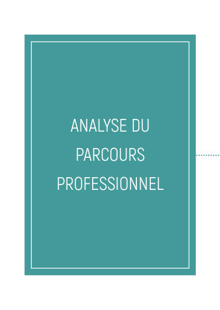
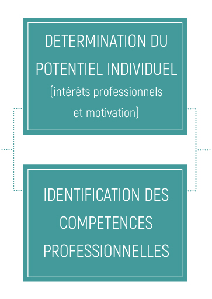
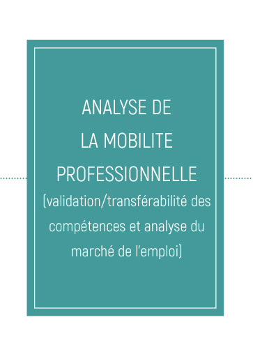
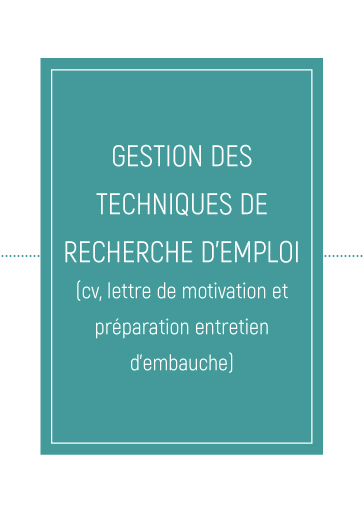
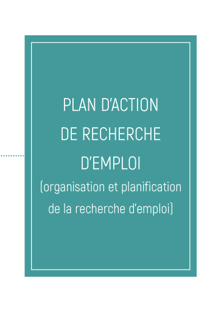

La mission du service « Accompagnement vers l'emploi » du CIGL Esch consiste à accompagner une dynamique dont le seul acteur est la personne en parcours, les encadrants étant des catalyseurs. Il s'organise autour de 4 grands axes :





Chaque demandeur d'emploi accueilli est pris dans son entité (personnelle et professionnelle) dès son arrivée par l'intermédiaire d'un entretien. Lors de cet entretien, le demandeur d'emploi signifie par la signature d'un contrat interne d'engagement réciproque sa volonté de s'impliquer dans une consolidation de sa situation sociale et / ou dans la construction de projets professionnels lui permettant d'intégrer plus facilement le premier marché du travail.
De cet engagement découle un parcours d'insertion socio-professionnelle individuel : entrée et adaptation dans la structure, validation et construction d'un projet de vie et projet professionnel (projet réaliste et réalisable), mise en place de formations « adaptation au poste de travail » en lien avec les postes vacants et formations continues (développement de compétences personnelles) dont le choix, le contenu et la durée varient en fonction des personnes et de leur parcours.
La formation prend un aspect important pour l'insertion professionnelle : suite à l'analyse du parcours du salarié en insertion, de son poste de travail et de l'identification du projet professionnel, des actions de formation spécifiques lui sont proposées.
Tout demandeur d'emploi allant au terme de son contrat de travail aura en sa possession un plan d'action de recherche d'emploi.
Par le biais de projets répondant à des besoins locaux et sociaux, le CIGL Esch met le demandeur d'emploi au centre de ses actions, le rendant acteur de son projet de vie.